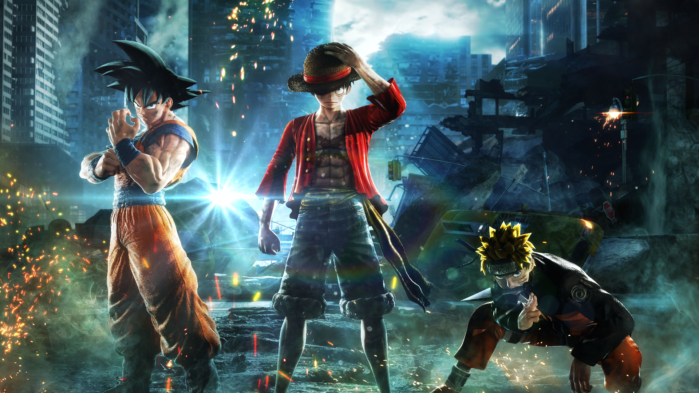

The Big 3 of Anime
One piece
One Piece follows the epic journey of Monkey D. Luffy, a cheerful and fearless young pirate with a body made of rubber. After eating a mysterious fruit called the Gomu Gomu no Mi (Gum-Gum Fruit), Luffy gains the ability to stretch his body like rubber—but loses the ability to swim.
His dream is to find the legendary treasure called “One Piece”, left behind by the Pirate King Gol D. Roger, and become the next Pirate King.
Bleach
Ichigo Kurosaki, a seemingly ordinary high school student, has the unique ability to see ghosts. His life changes forever when he meets Rukia Kuchiki, a Soul Reaper tasked with guiding souls to the afterlife and defending the human world from evil spirits called Hollows.
Naruto
These three manga have each received long running anime series, Bleach (2004-2012) has 366 episodes, Naruto (including Shippuden) has 720 episodes, and One Piece has 1074 episodes as of September 2023, with One Piece, Naruto Shippuden's sequel Boruto, and the Bleach sequel series Bleach: Thousand-Year Blood War still being produced. These statistics do not include the spin-offs, sequels, movies, or One Piece's live-action show, so the full numbers for entire franchises are higher.